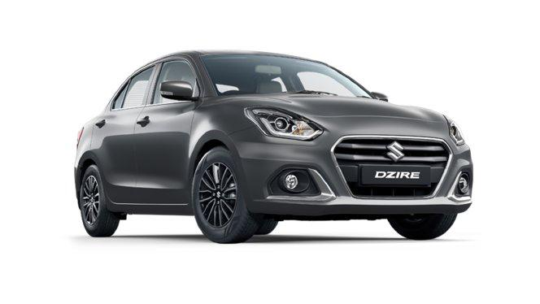

The Maruti Dzire has 1 Petrol Engine on offer. The Petrol engine is 1197 cc . It is available with Manual & Automatic transmission.Depending upon the variant and fuel type the Dzire has a mileage of 23.26 to 24.12 kmpl . The Dzire is a 5 seater 4 cylinder car and has length of 3995mm, width of 1735mm and a wheelbase of 2450mm.
-Some key specifications:
City mileage: 15.4 kmpl
Engine Displacement:1197
Max Power:88.50bhp@6000rpm
Seating Capacity: 5
Fuel Type: Petrol
Transmission Type: Automatic
Boot Space: 378
Service Cost: (Avg. of 5 years)Rs.3,546
No. of cylinder: 4
Max Torque (nm@rpm): 113Nm@4400rpm
Fuel Tank Capacity: 37L
Ground Clearance Unladen:
Turbo Charged: No
Drive Type: FWD
For more details you can visit the official website:
